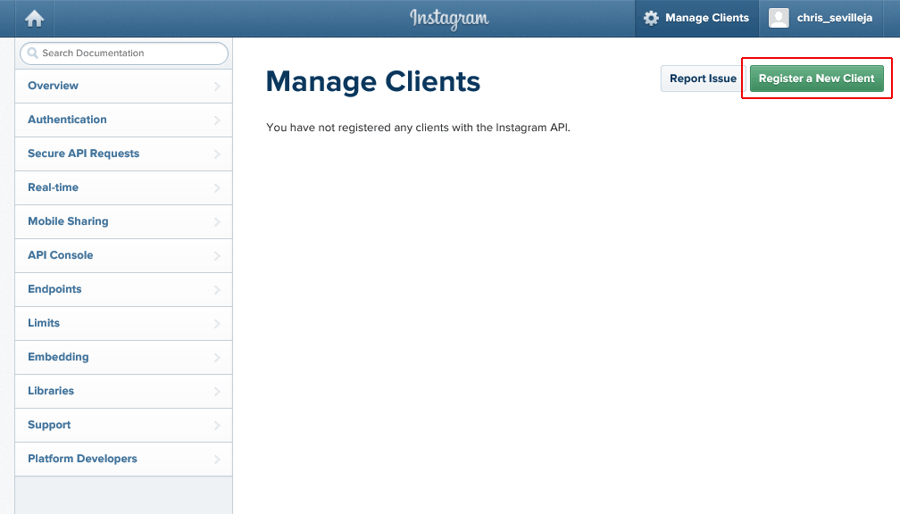
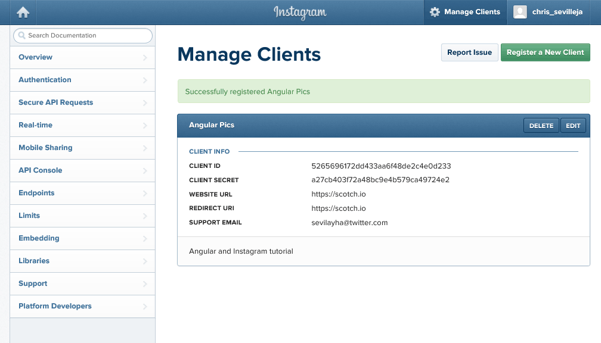
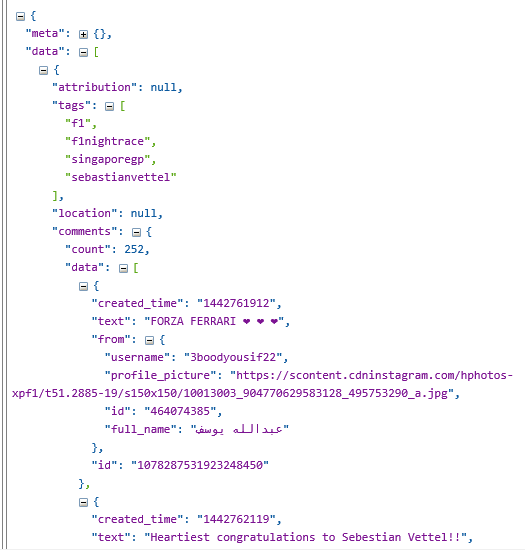

Instagram API
Чтобы использовать Instagram API, мы должны бесплатно зарегистрироваться как разработчики Instagram. Основные вещи, которые нам нужны для этого приложения — client_id и client_secret. Мы можем взять их после создания аккаунта и регистрации нового приложения.
Использование client_id и client_secret один из вариантов взятия данных из Instagram API. Другой — это позволить пользователям вашего приложения проводить аутентификацию, используя учетную запись пользователя. Пакет instagram-node содержит возможности для этого, но подобная задача выходит за рамки нашего руководства.
Мы можем сделать всё быстро на сайте Instagram Developer.

Перейдите на сайт и залогиньтесь.
Теперь перейдём к созданию нашего нового клиента (или приложения).

После создания нашего клиента мы получим client_id и client_secret.

Это именно то, что нам нужно для получения доступа к Instagram API через наше Node-приложение.
Анализ Instagram API
Давайте отвлечёмся на минуту и посмотрим через API на информацию, которую мы можем получить. Часто компании предоставляют анализатор API, так что вы можете использовать удобный интерфейс и увидеть данные JSON, которые придут из API. Парой крупных компаний, которые предлагают анализаторы API являются Facebook и Twitter.
Instagram API также предлагает анализатор через сервис под названием Apigee. Мы можем получить к нему доступ из панели управления Instagram и через Apigee Instagram API Explorer.
После открытия анализатора API он на первый взгляд может показаться немного сложным. В левой панели мы можем увидеть все вызовы API. Нам нужно только обратить внимание на вызов GET media/popular.

Если мы щёлкнем на вызове media/popular и добавим client_id пользователя в URL вроде такого:
https://api.instagram.com/v1/media/popular?client_id=e0e51c60672c4f09abe28c46c71a3a7a
то сможем увидеть, что API вернул важные изображения.

При ближайшем рассмотрении видим, что получаем массив изображений с именем data.
Если мы взглянем на отдельный объект в массиве data, то увидим, что он является одной фотографией со всей нужной нам информацией.

Мы можем получить информацию из comments, likes, images и user. Мы собираемся использовать их при создании нашего приложения. У нас есть всё необходимое:
- client_id;
- client_secret;
- понимание данных API.
Давайте двинемся дальше и получим эти данные в нашем приложении и покажем их пользователям.
Условия и правила Instagram API
Я призываю вас всегда читать условия и правила API перед использованием. Есть истории приложений, которые выросли успешными из-за того, что их доступ к API сбежал от них, потому что они нарушили условия.
Основные моменты в правилах Instagram.
- Нельзя заменять или повторять instagram.com или приложения Instagram.
- Нельзя показывать более 30 одновременно.
- Нельзя участвовать в любой программе обмена «лайками», «поделиться», «комментариями» или «фолловерами».
Большинство из этих правил довольно стандартны при использовании API. Создатель API хочет гарантировать, что его пользователей не забомят рекламой, спамом или фейковыми пользователями. Это помогает сохранить сообщество на высоком уровне культуры.
Итак, если мы не можем повторить сайт или приложение, какой смысл в работе с их API? Это хороший вопрос. Пока Instagram, кажется, довольно мягок с этими правилами, поскольку есть сайты и приложения, которые довольно близко повторяют основные функции. Также есть очень аккуратные приложения, вроде printstagram, которое позволит вам печатать квадратные изображения.
instagram-node
Вернёмся к нашему приложению; нам нужно будет настроить instagram-node. Давайте добавим эту строку в раздел конфигурации нашего файла server.js:
// КОНФИГУРАЦИЯ ПРИЛОЖЕНИЯ
// ==================================================
...
// настройка приложения с client_id
ig.use({
client_id: 'e0e51c60672c4f09abe28c46c71a3a7a',
client_secret: 'db11c575a8ae4f1aa90a03ba1d1345d8'
});
...Мы заполнили учётные данные клиента, вы можете свободно передавать их, пакет instagram-node обработает всё остальное. Мы не должны беспокоиться о добавлении client_id к любому URL, как это делали в анализе API.
Пакет также упрощает вызовы API для использования. Список вызовов API можно найти в документации. Вызов, который нам нужен для популярных картинок следующий:
ig.media_popular(function(err, medias, remaining, limit) {});Мы будем использовать этот вызов, чтобы передать medias в наше представление.

Все материалы сайта доступны по лицензии Creative Commons «Attribution-NonCommercial» («Атрибуция — Некоммерческое использование») 4.0 Всемирная, если не указано иное.